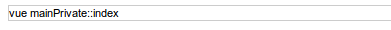

Création d'un réseau social avec le mkframework
-
I Préambule -
II Création et initialisation du projet -
III L'authentification -
IV Créons notre menu -
V Partie privée : le profil -
VI Partie privée : votre réseaux de contacts -
VII Partie privée : votre fil -
VIII Partie privée : administrez vos photos -
IX Profil partagé -
X Design/ esthétique -
XI Conclusion III L'authentification
III.A L'introduction
Dans ce projet, on a besoin d'une partie publique, permettant de s'authentifier ou de s'inscrire.
Et d'une partie privée contenant tout le reste.
Nous allons créer un module public où nous écrirons les page de login et d'inscription, et un
module mainPrivate qui contiendra l'essentiel de l'application (gestion de profil, d'amis, de
photos...)
III.B Créons un module privé
Lorsque vous vous authentifié, vous êtes redirigé sur une partie "privée", nous allons créer ce module "mainPrivate"
Créons un module vide, cliquez sur "creer un module" et renseigner les actions demandés
index, profil, posts, pictures et friends
III.C Créons le module d'authentification
Cliquez sur "Créer un module d'authentification "
Comme nous pouvons le voir, il nous faut ajouter deux méthodes à notre classe modèle de gestion des comptes de connexion.
Nous allons ajouter ces deux méthodes dans la classe model/model_user.php
Puis retourner sur la page et réactualisez
Ici on voit un menu déroulant préselectionné sur notre classe modèle user précédement enrichi de deux nouvelles méthodes ainsi que le nom du module d'authentification pré-rempli à "auth"
Changez le pour mainPublic, et ainsi créer un module d'authentification "mainPublic"
Notez que pour la ligne du dessous "Module vers lequel rediriger après authentification", on sélectionne mainPrivate, et action _index: en cas de bonne connexion, le module redirigera ici.
Indiquez le champ de login via le menu déroulant, ici "login" et le champ de mot de passe "pass"
Ici on peut lire d'une part qu'un module mainPublic a été créé, mais également qu'il faut éditer le fichier de configuration conf/site.ini.php
Ceci est un lien, vous pouvez cliquez dessus pour atteindre (via l'explorateur de projet) le fichier de configuration pour modifier ces deux valeurs "enabled" et "module" dans la section [auth]
Vous pouvez cliquer sur les liens "EDITER" pour editer ces 2 valeurs
En ouvrant votre navigateur à l'adresse du site
On se retrouve automatiquement sur la page de login (définit précédemment dans le fichier de
configuration)
Et si vous saisissez n'importe quel login/pass érronné (forcément la base est vide pour le moment)
Vous avez un message de mauvaise authentification
Mais ce n'est pas tout, le builder vous a également créé un formulaire d'inscription.
Profitez-en pour créer un compte "john" comme nom d'utilisateur et "pass" comme mot de passe
On peut désormais s'identifier

On arrive sur cette page vide qui nous indique que l'on est sur la page index de notre module mainPrivate
Lire la suite : IV Créons notre menu